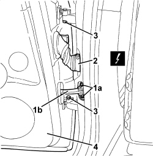
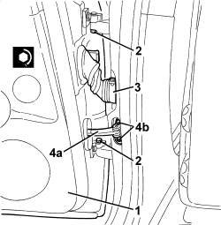

7210E38 R.R. REAR SIDE DOOR
- Path
- Procedures > 72 PANELS AND FRAMES > 7210 REMOVING-REFITTING > 7210E EXTERNAL PARTS > 7210E38 R.R. REAR SIDE DOOR
- Kind
- repair procedure (removal / refitting; the operation number is the code)
- Applies to
- all engines; all production periods
- Interactive page
- https://sloeber94.github.io/elrnDB/#/939011403
Applies to: all engines; all production periods
 Removing
Removing
 Refitting
Refitting- Lower the front window to the end of travel position.
1. Undo the bolts (1a) fixing the check strap (1b) to the frame, then close the door momentarily so that the check strap is inside.
2. Disconnect the electrical connection.
Description | Component |
|---|---|
LEFT REAR DOOR COUPLING | |
RIGHT REAR DOOR COUPLING |
3. Undo the bolts for the hinges.
4. Lift up the door and remove it.

Applies to: all engines; all production periods
Refitting
Removing- Check that the door is not damaged.
1. Place the door on the hinges.
2. Tighten the bolts for the hinges to the recommended torque.
Component | Fastening | dia | Value (daNm) | Validity |
|---|---|---|---|---|
DOOR HALF HINGES | Bolt | M6x14 | 1.2 ÷ 1.8 |
3. Connect the electrical connection.
- Check that the various consumers on the door are working.
4. Get the check strap (4a) out and tighten the bolts (4b) to the recommended torque.

Applies to: all engines; all production periods
Component | Fastening | dia | Value (daNm) | Validity |
|---|---|---|---|---|
DOOR CHECK STRAP | Bolt | M6x22 | 0.7 ÷ 1.1 |
- Check the door alignment and, if necessary, carry out:
Topics linked from this page (3)
- 7010A14 REAR SIDE DOOR - ADJUST CENTERING AND MOULDING - INCLUDES ADAPTATION OF HINGES AND SEALS ON DOOR COMPARTMENT
- D035 LEFT REAR DOOR COUPLING
- D036 RIGHT REAR DOOR COUPLING
Topics that link to this page (8)
- 7210B10 R.R. CENTRE PILLAR
- 7210B40 R.R. REAR INNER WHEEL ARCH
- 7210B45 R.R. REAR WING FRAME
- 7210B51 R R UPPER CHANNEL STIFFENER, (ONE) LH OR RH
- 7210B52 R.R. REAR WING LONGITUDINAL REINFORCEMENT (ONE), LEFT OR RIGHT
- 7210B65 R.R. REAR PILLAR (WING INTERIOR)
- 7210E34 R.R. ROOF PANEL/SIDE PANEL CONNECTION PROFILE-MOULDING
- 7210E44 R.R. DOOR SILL RAIL OUTER TRIM